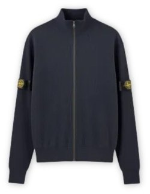
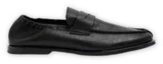

추천
브라운야드 차콜 니트 + STONE ISLAND 네이비 니트 집업 + 마르지엘라 코트
둘째 날은 상의만 브라운야드 차콜 니트로 바꿔요. 나머지는 첫날 그대로라 가방에 니트 한 장만 더 넣으면 돼요. 7~13°로 쌀쌀하니 니트 집업 위에 마르지엘라 코트까지 겹쳐 입으세요.
 니트브라운야드 차콜 니트
니트브라운야드 차콜 니트가방에 챙겨 가는 유일한 여벌 상의예요.

니트 집업STONE ISLAND 네이비 니트 집업첫날 입은 니트 집업이에요.
 코트메종 마르지엘라 블랙 퀼팅 코트
코트메종 마르지엘라 블랙 퀼팅 코트첫날 저녁에 입은 코트예요.
 긴바지블랭크룸 블랙 와이드 긴바지
긴바지블랭크룸 블랙 와이드 긴바지첫날 입은 와이드 바지예요.

로퍼로스트가든 블랙 레더 로퍼첫날 신은 로퍼예요.
 크로스백생로랑 블랙 나일론 크로스백
크로스백생로랑 블랙 나일론 크로스백첫날 든 크로스백이에요.